class: center, middle # EE-463 STATIC POWER CONVERSION-I # Harmonics and Filters ## Ozan Keysan ## [keysan.me](http://keysan.me) ### Office: C-113 <span class="meta">•</span> Tel: 210 7586 --- # Harmonics ### Ref: Lander CH7, Ericsson CH10,CH14 --- ## Delta or Wye Connections 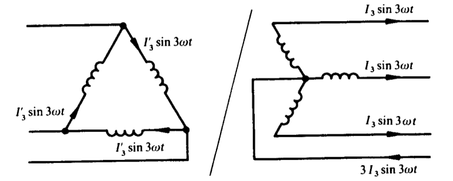 --- # Filters -- ## Consider a single phase rectifier -- 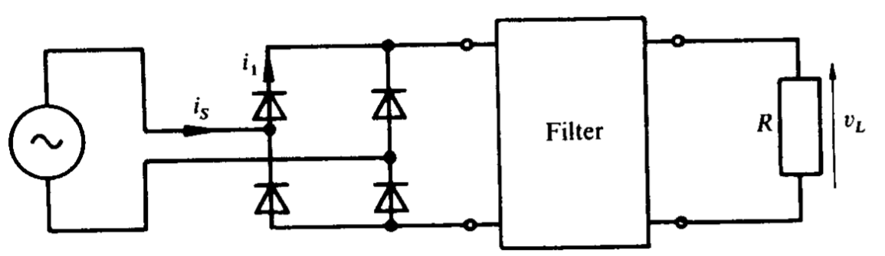 -- ### Can you draw voltage, current waveforms without filter? --- # Filters -- ## What about with Inductor? --- 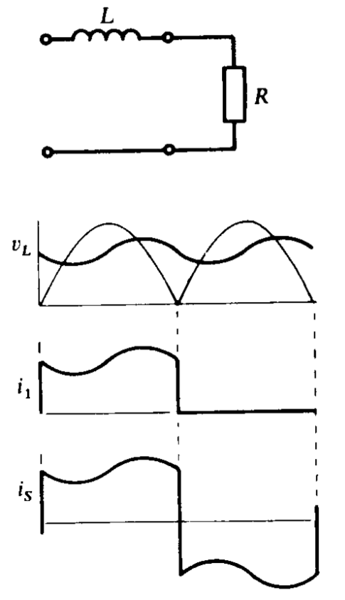 --- # Filters ## What about with Capacitor? --- 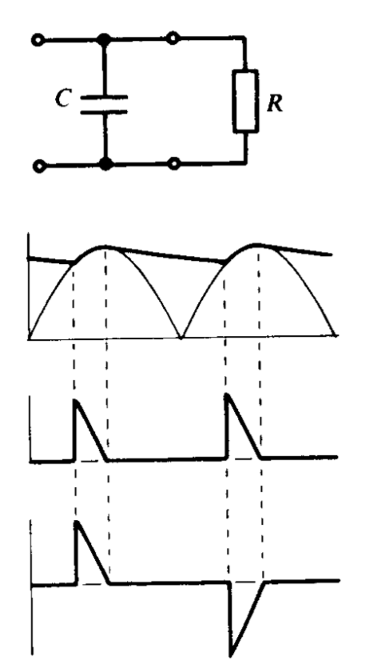 --- # Filters ## Capacitor and Inductor Combined? --- 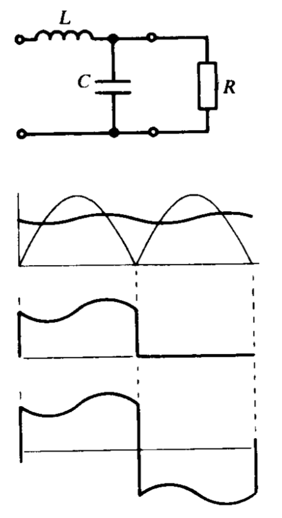 --- # LC Filter -- (Undamped) -- ## \\(f_o =\\) -- \\(\dfrac{1}{2\pi\sqrt{LC}}\\) -- ## Transfer Function -- ## \\(H(s) = \dfrac{1}{1+LCs^2}\\) --- # LC Filter -- ## With Damping -- ## \\(f_o = \dfrac{1}{2\pi\sqrt{LC}}\\) ## Damping Factor ## \\(\zeta = \dfrac{L}{2 R \sqrt{LC}}\\) --- ## Damping Factor 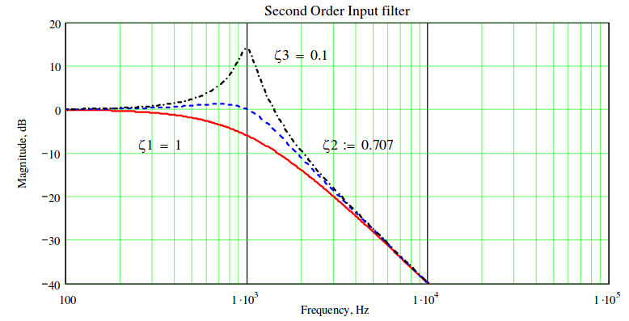 #### Damping factor controls the gain at the corner frequency #### Rule of thumb: \\(\zeta > \dfrac{1}{\sqrt{2}}\\) (gives 3dB attenuation at f0) -- ## \\(f_o =\\) -- \\(\dfrac{1}{2\pi\sqrt{LC}}\\) --- # Parallel Damped LC Filter -- 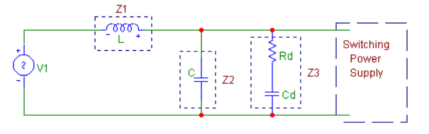 ### Detailed calculations given in the [handouts](http://www.ti.com/lit/an/snva538/snva538.pdf) --- # Parallel Damped LC Filter 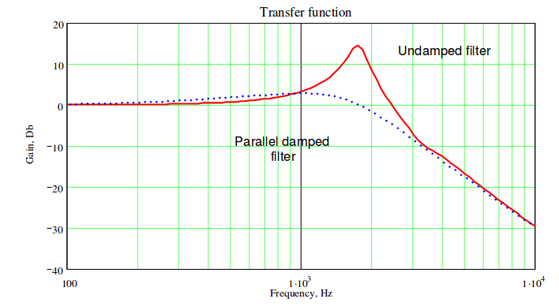 --- # Series Damped LC Filter 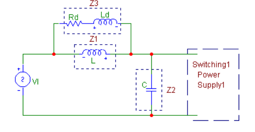 ### Detailed calculations given in the [handouts](http://www.ti.com/lit/an/snva538/snva538.pdf) --- # Multiple Stage Filters -- 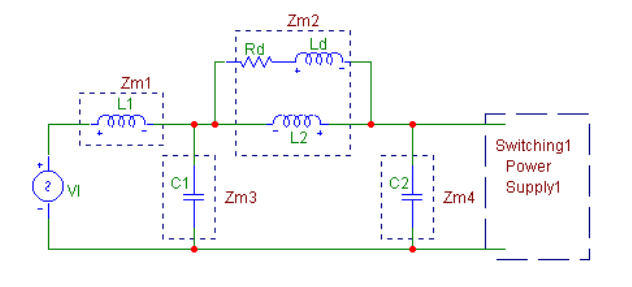 --- # Multiple Stage Filters 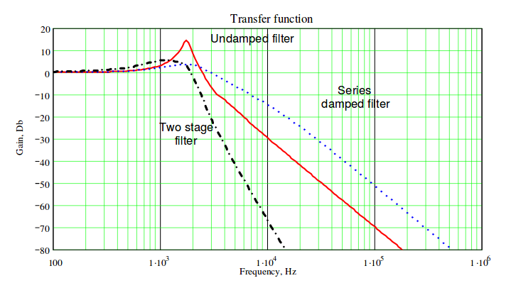 --- # Capacitor, Inductor Selection -- - ### Capacitors should be low ESL and ESR should be selected -- - ### The most common type is aluminum electrolytic type -- - ### Parallel connection of capacitors can help to reduce ESR and ESL -- - ### Filter inductances should have small parasitic capacitance --- # AC Line Filters -- ## Many filters can be cascaded to filter specific harmonics -- 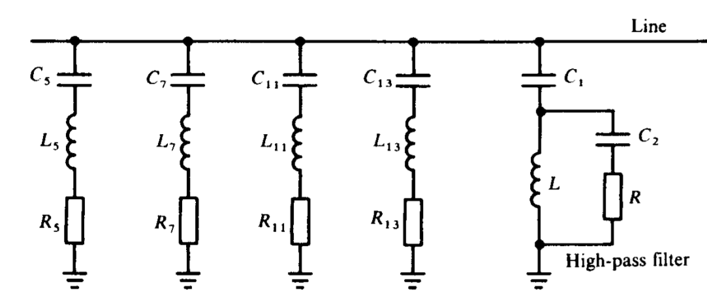 ### Harmonic line traps --- # Active Filters -- 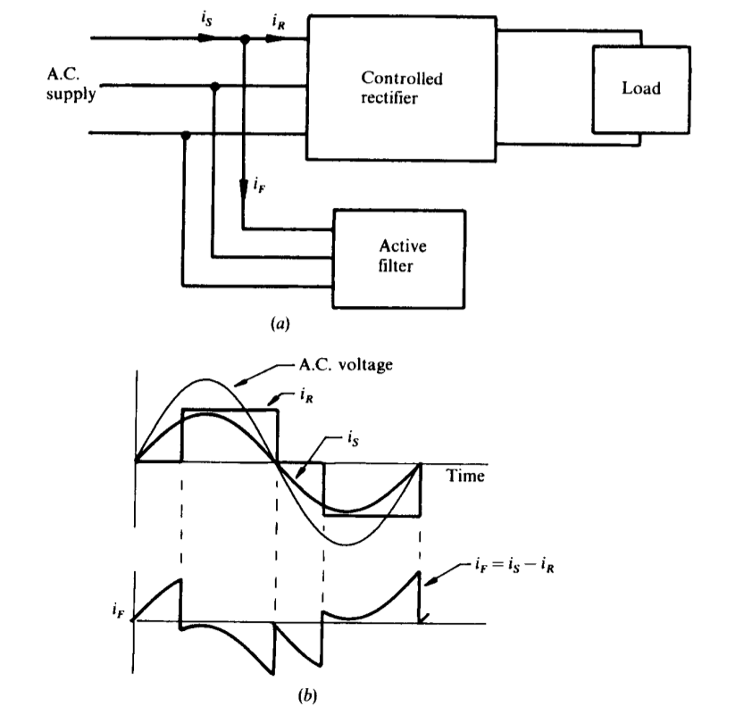 --- # Active Filters <img src="./images/ee463/3phase_current_sourced_active_filter.png " alt="Drawing" style="width: 700px;"/> ### 3-Phase Current Sourced Active Filter --- # Active Filters <img src="./images/ee463/3phase_current_sourced_active_filter2.png " alt="Drawing" style="width: 700px;"/> ### 3-Phase Current Sourced Active Filter --- # Useful Documents - ### [Input and Output Capacitor Selection](http://www.ti.com/lit/an/slta055/slta055.pdf) - ### [Technical Info for Capacitors](http://wima.cn/EN/technicalinformation.htm) - ### [Aluminum Electrolytic Capacitors](https://en.tdk.eu/download/530740/c7753b89cb5f4c7802e9d7ec5bf8678e/pdf-pulsegeneral.pdf) - ### [Capacitor Input Filter Calculation](http://www.electroschematics.com/7048/capacitor-input-filter-calculation/) - ### [Power Smoothing](http://www.skillbank.co.uk/psu/smoothing.htm) --- ## You can download this presentation from: [keysan.me/ee463](http://keysan.me/ee463)